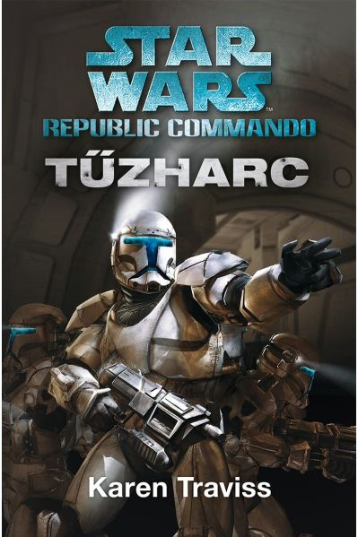
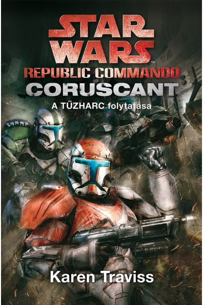
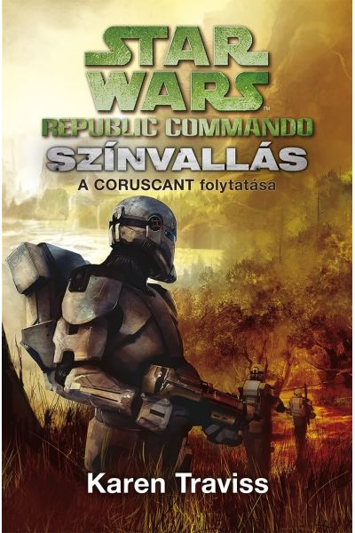
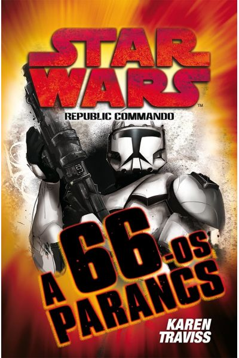
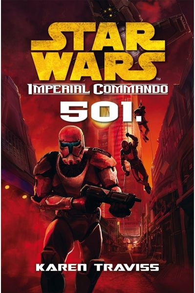

Karen Traviss-Tűzharc
Karen Traviss Tűzharc című Star Wars regénye 2004-ben jelent meg. A Yavin -i csata előtti 22. évben játszódik a Qiilura bolygón. Ebben a regényben az Omega osztag áll a középpontban, amelynek négy klón katonája, Darman, Fi, Atin és Niner egy veszélyes szeparatista labor elleni küldetésre indul. További főszereplők a mesterét elvesztő Etain Tur-Mukan jedi lány, Jinart, az alakváltó lény, valamint az ellenfélnél a mandalori Ghez Hokan és a labort irányító hölgy, Uthan doktor. A Tűzharc című regényben Darman és Etain véletlenszerű találkozása egy boldog-drámai kapcsolat kialakulását is előrevetíti. Az angol írónő – aki katonai múlttal is rendelkezik – kiválóan ábrázolta a klónok lelkivilágát, és a harcokban, leírásokban is remekel. Nekem a Tűzharc tetszett a legjobban a Republic Commando regény sorozatban. Itt még semmi sincs túlbonyolítva, nincsenek hosszadalmas leírások, időhúzás, csak az izgalmas történet, akciók személyes drámák. Etain önviaskodó, fejlődőben levő, de jóindulatú személyisége szimpatikus volt, és az Omega osztag kommandósait is kedveltem.
Karen Traviss-Coruscant
A Coruscant című folytatás 2006-ban jelent meg. Ez a könyv rengeteg információt ad a klón katonákról, a mandalori hagyományokról és a szereplőkről. Itt ismerhetjük meg közelebbről Kal Skirata őrmester és a Nullás Mélységi Felderítők történetét. Az események ezúttal a „fővárosbolygón” játszódnak. Karen Traviss az előző rész egyszerűségéhez képest itt rengeteg karaktert mozgat, és jóval nehezebb a sztorira összpontosítani. Látszik, hogy igyekezett a klón katonák életét, gondolkodását, személyiségét és körülményeiket közelről bemutatni, és ez sikerült is. A hátránya, hogy meglehetősen terjedelmes lett a mű, és a Tűzharchoz képest nem tudott annyira lekötni. A Coruscant regényben egy újabb osztagot is megismerhetünk, a Deltá -t, és Walon Vau kiképző is megjelenik. A jedik közül Etain és Arligan Zey mesteren kívül megismerhetjük a fiatal Bardan Jusik -ot is. És persze Kirata „fiai” közül kiemelkedik Ordo százados, akik különösen közel áll hozzá. De akár megemlíthetem Mird -et is, aki (ami) Vau hatlábú skrill háziállata. Kétségkívül a Coruscant – vagy eredeti címén Tripla Zero – ismeretek, háttértörténet, klónok megismerése szempontjából egyedülálló kincs. Ami miatt nem voltam elégedett vele, az, hogy túlzottan szerteágazó volt, hiányoztak az igazán jól kidolgozott negatív karakterek, és nagyon hosszúra nyúlt.
Karen Traviss–Színvallás
A Színvallás című történet 2007-ben jelent meg. Több szálon és helyszínen zajlik, és itt már erőteljesen felbukkan az a szándéka Skiratának, hogy valamilyen módon megakadályozza a klón katonák kétszeres gyorsaságú öregedését. Az egyik fő új karakter Ko Sai, a kaminói genetikus, akinek ismereteit Palpatine főkancellár akarja felhasználni, de Skiratáéknak is szükségük van a tudására. A Színvallás komoly erkölcsi kérdéseket feszeget és itt már a jedik (különösen Etain és Bardan Jusik) számára sem egyértelmű a jó és rossz döntés. Tovább fokozza a regény szimpátiánkat a klónok iránt és megtudjuk, hogy közülük is többen megkérdőjelezik a „rendszer” helyességét. Fontos szerepe van a Színvallásban Besany Wennen -nek, aki köztársasági munkájában nyomozásával is segítette főszereplőinket, hiszen Ordo barátnője. Ugyanígy lényeges momentum Fi súlyos sebesülése, és Jusik gyógyítási kísérletei, ehhez járul Etain terhessége, amit titokban kell tartani. Erről a kötetről szintén sok dicséretet és kritikát is olvastam régebben és érthető mindegyik. Egy csomó olyan kérdést felvet a szerző, ami tovább viszi gondolatainkat egy szimpla Star Wars szórakozáson. Morális, politikai, emberi kérdések ezek, amelyek a klónháborúban erőteljesen ott voltak a háttérben. Másfelől viszont ismét rendkívül hosszúra sikeredett a regény, voltak benne szárazabb, monotonabb részek, a történet néha alig haladt előre.
Karen Traviss–A 66-os parancs
A 2009-ben megjelent A 66-os parancs egy hosszabb időszakot ölel fel a fontos eseményt megelőzően és a következményeit. Számos szálon zajlanak az események, megtudjuk, hogy a háttérben Palpatine már egy másik klónhadsereg létrehozásán szervezkedik. Etainnnek másra kell bíznia kisfia felügyeletét és Jusik immár nem jediként van jelen. A 66-os parancs regénynél bosszantóan hosszú volt az előjáték, amit később nagyon izgalmas jelenetek követnek, majd Traviss ismét feleslegesen túlnyújtja a történetet. Mindenesetre a 66-os parancs annyira drámai és sokkoló, hogy muszáj elolvasni. Itt már elég negatívan van bemutatva a Jedi Rend. Ráadásul ama bizonyos főszereplő cselekedete, s tragédiája annyira értelmetlennek tűnt… De magának a 66-os parancsnak a leírása, levezetése, és ahogyan véghezvitték, itt teljesen rendben van, logikus, érthető. Csakhogy később „A klónok háborúja” animációs sorozatban ezt semmibe vették, és kitalálták a klónok fejébe ültetett chip -et. Ez szerintem brutális ostobaság (gyengeség) volt a részükről, Karen Traviss verziója sokkal jobb. A 66-os parancs talán a legnagyobb hatású volt a Republic Commando könyvsorozat rajongói körében. Sokakat mellbe vágta, s mélyen megérintette, de ezúttal sem maradtak el a kritikák. Történet szempontjából ez volt a fordulópont a klónháború végének közeledte miatt. Viszont a jedik népszerűségét, s megítélését nagyban csökkentette.
Karen Traviss–501
Az 501 szintén 2009-ben jelent meg és közvetlenül a háború után zajló eseményekről szól. Az előző regényekben bemutatott Mandalor itt már rejtekhelyként szolgál főszereplőink számára, miközben a többi klón az újonnan megalakult Birodalmat szolgálja. Itt ismét belép néhány új szereplő, például a kaminói Kina Ha, Nyreen, akit az események közelebbi kapcsolatba hoznak Skiratával, Gilamar, az orvos és Jango Fett nővére is. De régi szereplőként előkerül doktor Uthan – immár pozitív résztvevőként – és a Yoda: A sötét találkozó regényből megismert jedi lány, Scout. Az új rend a birodalmi katonákkal, ijesztő. Darman egészen megváltozik. Nem felejthetem el Altis mestert sem, aki jedijeivel egy külön ágat képvisel, akik szabadabb nézeteket vallanak. Itt kerül szóba Plett kútja is, amely A jedik gyermekei regényben szerepel, és Callista is, aki úgyszintén. Az 501 című regényben nincsen fő küldetés, vagy vezérszál, ez inkább amolyan „levezetés”, menekülés a múlttól. Persze Skirata és fiai céljai megmaradtak, de most már mindent titokban kell csinálniuk, hiszen az új rendszer szemében még ink
